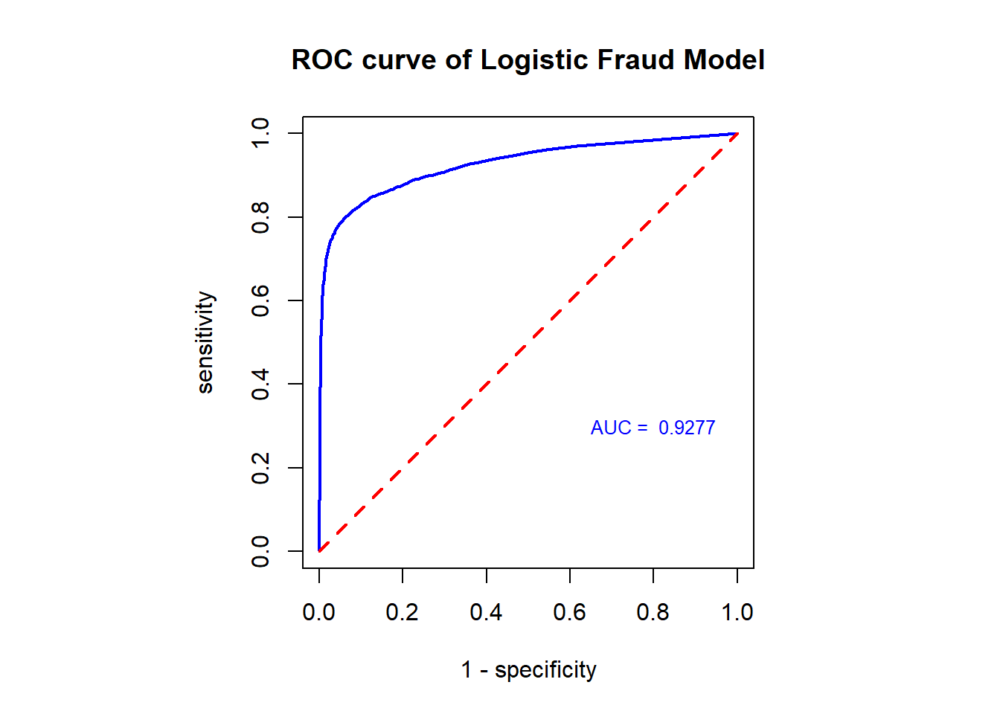

Topic 12 Case Study - Logistic regression model with the fraud data
This case study shows how to calculate the local and global performance metrics for logistic predictive models. We have used the confusion matrix in the case study in the previous note. Here we will use the optimal cut-off probability as the decision threshold to define a confusion matrix and then define the performance measure based on this matrix.
We reload the data and create the training and testing data sets. We pretend the optimal cut-off probability is based on what is obtained through the CV. The testing data set will be used to report the local and global performance measures.
fraud.data = read.csv("https://pengdsci.github.io/datasets/FraudIndex/fraudidx.csv")[,-1]
## recode status variable: bad = 1 and good = 0
good.id = which(fraud.data$status == " good")
bad.id = which(fraud.data$status == "fraud")
##
fraud.data$fraud.status = 0
fraud.data$fraud.status[bad.id] = 1
nn = dim(fraud.data)[1]
train.id = sample(1:nn, round(nn*0.7), replace = FALSE)
training = fraud.data[train.id,]
testing = fraud.data[-train.id,]12.1 Local Performance Meaures
Since we have identified the optimal cut-off probability to be 0.57. Next, we will use the testing data set to report the local measures.
## Warning: glm.fit:拟合機率算出来是数值零或一newdata = data.frame(index= testing$index)
pred.prob.test = predict.glm(test.model, newdata, type = "response")
testing$test.status = as.numeric(pred.prob.test > 0.57)
### components for defining various measures
TN = sum(testing$test.status ==0 & testing$fraud.status==0)
FN = sum(testing$test.status ==0 & testing$fraud.status ==1)
FP = sum(testing$test.status ==1 & testing$fraud.status==0)
TP = sum(testing$test.status ==1 & testing$fraud.status ==1)
###
sensitivity = TP / (TP + FN)
specificity = TN / (TN + FP)
###
precision = TP / (TP + FP)
recall = sensitivity
F1 = 2*precision*recall/(precision + recall)
metric.list = cbind(sensitivity = sensitivity,
specificity = specificity,
precision = precision,
recall = recall,
F1 = F1)
kable(as.data.frame(metric.list), align='c', caption = "Local performance metrics")| sensitivity | specificity | precision | recall | F1 |
|---|---|---|---|---|
| 0.7425021 | 0.9740736 | 0.8974625 | 0.7425021 | 0.8126612 |
12.2 Global Measure: ROC and AUC
In order to create an ROC curve, we need to select a sequence of decision thresholds and calculate the corresponding sensitivity and specificity.
CAUTION: ROC and AUC are used for model selection, we still use the training data to construct the ROC and calculate the AUC.
cut.off.seq = seq(0, 1, length = 100)
sensitivity.vec = NULL
specificity.vec = NULL
###
training.model = glm(fraud.status ~ index, family = binomial(link = logit), data = training)## Warning: glm.fit:拟合機率算出来是数值零或一newdata = data.frame(index= training$index)
pred.prob.train = predict.glm(training.model, newdata, type = "response")
for (i in 1:100){
training$train.status = as.numeric(pred.prob.train > cut.off.seq[i])
### components for defining various measures
TN = sum(training$train.status == 0 & training$fraud.status == 0)
FN = sum(training$train.status == 0 & training$fraud.status == 1)
FP = sum(training$train.status == 1 & training$fraud.status == 0)
TP = sum(training$train.status == 1 & training$fraud.status == 1)
###
sensitivity.vec[i] = TP / (TP + FN)
specificity.vec[i] = TN / (TN + FP)
}
one.minus.spec = 1 - specificity.vec
sens.vec = sensitivity.vec
## A better approx of ROC, need library {pROC}
prediction = pred.prob.train
category = training$fraud.status == 1
ROCobj <- roc(category, prediction)## Setting levels: control = FALSE, case = TRUE## Setting direction: controls < cases AUC = round(auc(ROCobj),4)
##
par(pty = "s") # make a square figure
plot(one.minus.spec, sens.vec, type = "l", xlim = c(0,1), ylim = c(0,1),
xlab ="1 - specificity",
ylab = "sensitivity",
main = "ROC curve of Logistic Fraud Model",
lwd = 2,
col = "blue", )
segments(0,0,1,1, col = "red", lty = 2, lwd = 2)
#AUC = round(sum(sens.vec*(one.minus.spec[-101]-one.minus.spec[-1])),4)
text(0.8, 0.3, paste("AUC = ", AUC), col = "blue", cex = 0.8)